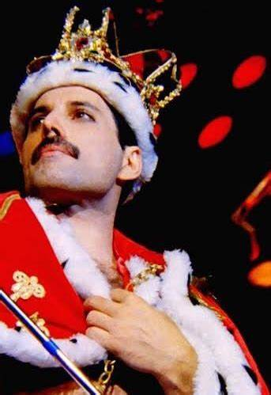
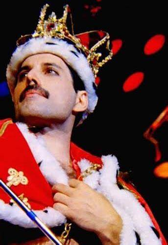

Zanzibar: As Raízes de Freddie Mercury
Freddie Mercury nasceu em 5 de setembro de 1946, na cidade de Stone Town, localizada na ilha de Zanzibar, que na época era um protetorado britânico. Hoje parte da Tanzânia, Zanzibar é um arquipélago conhecido por sua rica história e mistura de culturas africanas, árabes e indianas. Essa diversidade cultural foi o pano de fundo de sua infância.
Os pais de Freddie, Bomi e Jer Bulsara, eram da comunidade parsi e praticantes do zoroastrismo, uma religião que valoriza o equilíbrio entre o bem e o mal. Essa herança multicultural e religiosa pode ter influenciado a sensibilidade artística e visão global do cantor, refletidas em sua música e estilo de vida.
Apesar de deixar Zanzibar ainda jovem, a conexão com a ilha nunca desapareceu, sendo uma parte importante de sua história e de sua identidade única.
Influências Culturais e Étnicas: Raízes Zoroastristas e Ascendência Parsi de Freddie Mercury
A herança cultural de Freddie Mercury foi profundamente influenciada por suas raízes zoroastristas e pela ascendência parsi, elementos que desempenharam um papel importante na formação de sua identidade, visão de mundo e até mesmo na sua carreira musical. Freddie nasceu em Zanzibar, em uma família de origem parsi, cuja fé zoroastrista remonta à antiga Pérsia (atualmente Irã). Esse legado cultural e religioso teve um impacto significativo no seu desenvolvimento pessoal e artístico.
Zoroastrismo: Princípios Filosóficos e Espirituais
O zoroastrismo, uma das religiões mais antigas do mundo, enfatiza a dualidade entre o bem e o mal, a importância de boas ações e a pureza do espírito. Embora Freddie Mercury tenha se afastado da religião em sua vida adulta, as lições fundamentais dessa crença, como o equilíbrio e o autocontrole, podem ser vistas em seu comportamento artístico e público. Sua busca incessante pela perfeição e sua habilidade de se expressar de maneiras distintas refletem uma busca interior pela harmonia, algo que ressoa com os princípios do zoroastrismo.
Ascendência Parsi: Mistura de Culturas
A comunidade parsi, uma minoria religiosa e étnica de origem persa, carrega uma rica tradição de migração e adaptação. Os parsis, conhecidos por sua contribuição à sociedade em diversas áreas, como negócios e artes, têm uma identidade cultural que é uma fusão de influências persas e indianas. Freddie, sendo filho de parsis, cresceu imerso em um ambiente onde diferentes culturas e tradições se encontravam, o que alimentou sua visão global e aberta. A capacidade de navegar entre diferentes mundos culturais provavelmente ajudou a moldar a versatilidade musical de Freddie, permitindo-lhe mesclar elementos de rock, ópera e outros gêneros de maneira única.
Influências na Música e Estética
Freddie Mercury incorporou essas influências em sua música e estética. Sua carreira, marcada por um estilo teatral e vibrante, reflete a flexibilidade cultural herdada de suas raízes. Além disso, sua habilidade de mesclar diferentes influências musicais, desde o rock clássico até a ópera, pode ser vista como uma metáfora para a maneira como ele navegava entre diferentes aspectos de sua identidade cultural. As letras de algumas de suas músicas, como "Bohemian Rhapsody", com suas referências a mitos e imagens religiosas, podem ser interpretadas como um reflexo da complexidade de sua formação cultural.
Em suma, as influências zoroastristas e parsis de Freddie Mercury não apenas moldaram sua visão espiritual e filosófica, mas também tiveram um papel crucial na formação de sua personalidade multifacetada e de sua carreira musical única.
Aspectos Filosóficos e Espirituais
Freddie Mercury, apesar de sua vida pública frequentemente ligada ao hedonismo e à busca por prazer, também lidava com questões filosóficas e espirituais profundas. Ao longo de sua carreira, suas músicas e atitudes demonstraram uma complexidade existencial, refletindo suas crenças sobre a vida, a morte e o sentido da existência. Embora não tenha se identificado com uma religião de forma prática, a busca por respostas espirituais e a exploração de questões existenciais estavam presentes em sua arte.
Reflexões sobre a Vida e a Morte
Um dos temas mais recorrentes nas músicas de Freddie Mercury é a reflexão sobre a morte, o fim da vida e a busca por significado. Em músicas como "The Show Must Go On", ele abordou o inevitável ciclo da vida e a resiliência necessária para enfrentar a adversidade. A ideia de continuar a viver e criar apesar da iminência da morte refletia uma atitude filosófica de aceitação e resistência.
O Desafio da Solidão e da Identidade
Outro aspecto filosófico presente na vida e obra de Freddie foi a questão da solidão e da identidade. Embora fosse um ícone global e tivesse milhares de fãs, ele lutava com sentimentos de solidão e com a busca de sua verdadeira identidade. Isso é evidente em canções como "Bohemian Rhapsody" e "Somebody to Love", onde ele expressa suas angústias internas e seu desejo de aceitação. Freddie, com sua complexidade emocional, refletiu em suas músicas sobre a difícil jornada de encontrar equilíbrio entre o indivíduo e o mundo ao seu redor.
A Busca pela Perfeição Artística
Freddie também tinha uma abordagem filosófica em relação à sua arte. Sua incessante busca pela perfeição musical e visual, muitas vezes em colaboração com os outros membros do Queen, demonstra uma visão quase espiritual do processo criativo. Para ele, a música era um meio de explorar sua própria identidade e de expressar sentimentos e pensamentos complexos, em constante busca por algo transcendental e universal.
Em resumo, os aspectos filosóficos e espirituais de Freddie Mercury eram tão multifacetados quanto sua música. Ele abordou questões existenciais de maneira única, utilizando sua arte como um veículo para refletir sobre a vida, a morte e a busca por significado, com uma profundidade que muitos podem não perceber à primeira vista.
Galeria de Imagens
Momentos com a Banda Queen
.jpg) 

Curiosidades
-
1. Freddie Mercury era talentoso no design gráfico
Ele criou o icônico logotipo do Queen, com o símbolo de dois leões, uma fênix e o zodíaco. O design é uma representação das personalidades de cada membro da banda.
-
2. Nome de nascimento de Freddie
Freddie Mercury nasceu como Farrokh Bulsara em Zanzibar. Ele adotou o nome artístico de Freddie Mercury após começar sua carreira musical.
-
3. O alcance vocal impressionante
Freddie tinha um alcance vocal de quatro oitavas, o que é extremamente raro. Isso lhe permitiu cantar uma vasta gama de estilos e notas com grande poder e clareza.